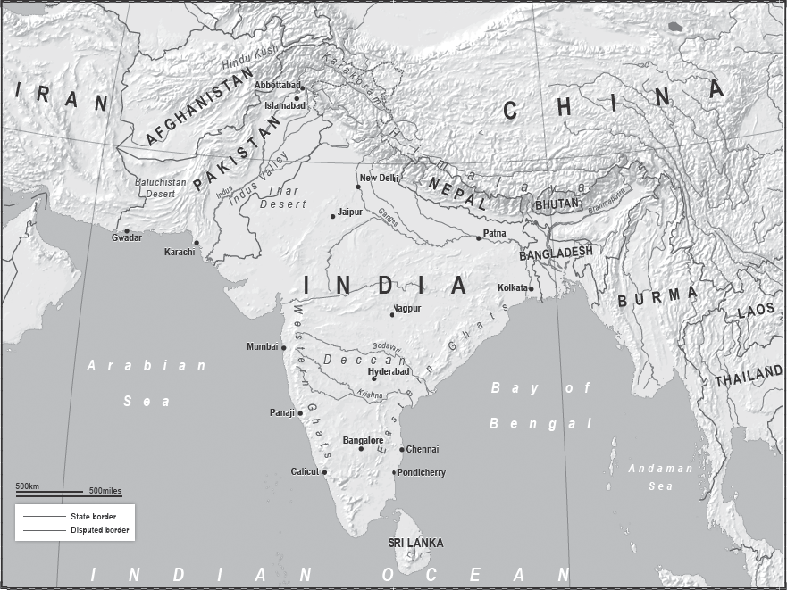
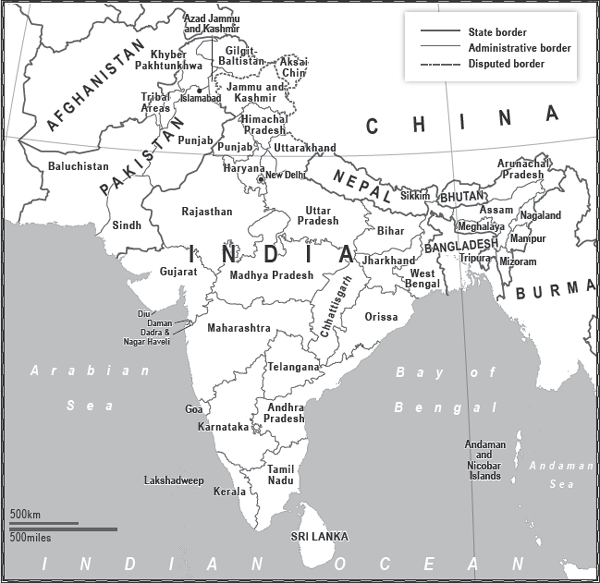
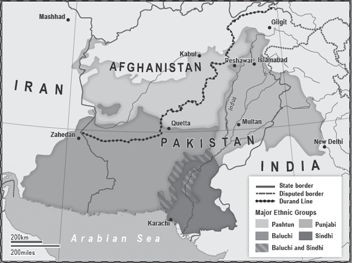

‘India is not a nation, nor a country. It is a subcontinent of nationalities.’
Muhammad Ali Jinnah

INDIA AND PAKISTAN CAN AGREE ON ONE THING: NEITHER WANTS the other one around. This is somewhat problematic given that they share a 1,900-mile long border. Each country fairly bristles with antagonism and nuclear weapons, so how they manage this unwanted relationship is a matter of life and death on a scale of tens of millions.
India has a population approaching 1.3 billion people, while Pakistan’s is 182 million. Impoverished, volatile and splintering, Pakistan appears to define itself by its opposition to India, while India, despite obsessing about Pakistan, defines itself in many ways, including that of being an emerging world power with a growing economy and an expanding middle class. From this vantage point it looks across at Pakistan and sees how it outperforms it on almost all economic and democratic indicators.
They have fought four major wars and many skirmishes. Emotions run hot. An oft-quoted remark by a Pakistani officer that Pakistan would make India bleed by a thousand cuts was addressed in late 2014 by military analyst Dr Amarjit Singh writing in the Indian Defence Review: ‘Whatever others may believe, my opinion is simply that it is better for India to brave a costly nuclear attack by Pakistan, and get it over with even at the cost of tens of millions of deaths, than suffer ignominy and pain day in and day out through a thousand cuts and wasted energy in unrealized potential.’ That may not reflect official government policy, but it is an indication of the depth of feeling at many levels in both societies. Modern Pakistan and India were born in fire; next time the fire could kill them.
The two are tied together within the geography of the Indian subcontinent, which creates a natural frame. The Bay of Bengal, the Indian Ocean and the Arabian Sea are respectively to the south-east, south, and south-west, the Hindu Kush to the north-west, and the Himalayas to the north. Moving clockwise, the plateau of the Baluchistan Desert climbs steadily before becoming the mountains of the North West Frontier, which rise even higher to become the Hindu Kush. A right turn east connects to the Karakoram Range, which then leads to the Himalayas. They sweep right along the border with China all the way to Burma. From there, as India curves around Bangladesh, the terrain descends south to the Bay of Bengal.
The interior of the frame contains what are modern-day India, Pakistan, Bangladesh, Nepal and Bhutan. The latter two are impoverished landlocked nations dominated by their giant neighbours, China and India. Bangladesh’s problem is not that it lacks access to the sea, but that the sea has too much access to Bangladesh: flooding from the waters of the Bay of Bengal constantly afflicts the low-lying territory. Its other geographical problem is that it is almost entirely surrounded by India, because the 2,545-mile long frontier, agreed in 1974, wrapped India around Bangladesh, leaving it only a short border with Burma as an alternative land route to the outside world.
Bangladesh is volatile, and contains Islamist militants which trouble India; but none of these three smaller countries within the subcontinent can ever rise to threaten its undisputed master. Nor would Pakistan be considered a threat to India had it not mastered the technology of developing nuclear weapons in the decades following the partition of the region in 1947.
The area within our frame, despite being relatively flat, has always been too large and diverse to have strong central rule. Even the British colonial overlords, with their famed bureaucracy and connecting rail system, allowed regional autonomy and indeed used it to play local leaders off against each other. The linguistic and cultural diversity is partially due to the differences in climate – for example, the freezing north of the Himalayas in contrast to the jungles of the south – but it is also because of the subcontinent’s rivers and religions.
Various civilisations have grown up along these rivers, such as the Ganges, the Brahmaputra and the Indus. To this day the population centres are dotted along their banks, and the regions, so different from each other – for example the Punjab, with its Sikh majority, and the Tamil speakers of Tamil Nadu – are based on these geographical divides.
Different powers have invaded the subcontinent over the centuries, but none have ever truly conquered it. Even now New Delhi does not truly control India and, as we shall see, to an even greater extent Islamabad does not control Pakistan. The Muslims had the greatest success in uniting the subcontinent under one leadership, but even Islam never overcame the linguistic, religious and cultural differences.
The first Muslim invasion was as early as the eighth century CE, when the Arabs of the Umayyad Caliphate made it as far as the Punjab in what is now Pakistan. From then until the eighteenth century various foreign invasions brought Islam to the subcontinent; however, east of the Indus River Valley a majority of the Hindu population resisted conversion, thus sowing the seeds for the eventual partition of India.
The British came, and went, and when they went the centre could not hold, and things fell apart. In truth, there was no real centre: the region has always been divided by the ancient disparities of the languages of the Punjab and Gujarat, the mountains and the deserts, and Islam and Hinduism. By 1947 the forces of post-colonial nationalism and religious separatism broke the subcontinent into two, and later three, major pieces: India, Pakistan and Bangladesh. The British, exhausted by two world wars, and aware that the days of empire were coming to a close, did not cover themselves in glory in the manner of their leaving.
On 3 June 1947 the announcement was made in the House of Commons: the British would withdraw – India was to be partitioned into the two independent dominions of India and Pakistan. Seventy-three days later, on 15 August, they were all but gone.
An extraordinary movement of people followed as millions of Muslims fled the new borders of India, heading west to Pakistan, with millions of Hindus and Sikhs coming the other way. Columns of people 30,000-strong were on the roads as whole communities moved. Trains packed full of refugees criss-crossed the subcontinent disgorging people into cities and making the return journey filled with those heading in the other direction.
It was carnage. Riots broke out across both countries as Muslims, Hindus, Sikhs and others turned on each other in panic and fear. The British government washed its hands and refused pleas from the new Indian and Pakistani leaders for the few troops still in the country to help maintain order. Estimates of the death toll vary, but at least a million people died and 15 million were displaced. The Muslim-majority areas in the west – the Indus Valley region west of the Thar Desert and the Ganges River basin – became West Pakistan while those to the east of Calcutta (now Kolkata) became East Pakistan.
What did Pakistan get out of this? Much less than India. It inherited India’s most troublesome border, the North West Frontier with Afghanistan, and it was a state split into two non-contiguous regions with little to hold it together as 1,000 miles of Indian territory separated West Pakistan from East Pakistan. Alaska and the rest of the USA have managed the problem of non-contiguous distance without difficulty, but they are culturally, linguistically and economically linked and operating in a stable environment. The only connection between the two parts of Pakistan was Islam. They never really came together, so it was no surprise when they were torn apart; in 1971 East Pakistan rebelled against the dominance of West Pakistan, India intervened and, after much bloodshed, East Pakistan seceded, becoming Bangladesh.
However, back in 1947, twenty-five years after the end of the Ottoman Empire, Jinnah and the other leaders of the new Pakistan, amid much fanfare and promises of a bright future, claimed they had created a united Muslim homeland.
Pakistan is geographically, economically, demographically and militarily weaker than India. Its national identity is also not as strong. India, despite its size, cultural diversity, and secessionist movements, has built a solid secular democracy with a unified sense of Indian identity. Pakistan is an Islamic state with a history of dictatorship and populations whose loyalty is often more to their cultural region than to the state.
Secular democracy has served India well, but the 1947 division did give it a head start. Within the new borders of India was the vast majority of the subcontinent’s industry, most of the taxable income base and the majority of the major cities. For example Calcutta, with its port and banking sector, went to India, thus depriving East Pakistan of this major income provider and connection to the outside world.
Pakistan received just 17 per cent of the financial reserves which had been controlled by the pre-partition government. It was left with an agricultural base, no money to spend on development, a volatile western frontier and a state divided within itself in multiple ways.
The name Pakistan gives us clues about these divisions; pak means ‘pure’ and stan means ‘land’ in Urdu, so it is the land of the pure, but it is also an acronym. The P is for Punjab, A is for Afghania (the Pashtun area by the Afghan border), K for Kashmir, S for Sindh and T stands for ‘tan’, as in Baluchistan.
From these five distinct regions, each with their own language, one state was formed, but not a nation. Pakistan tries hard to create a sense of unity, but it remains rare for a Punjabi to marry a Baluchi, or a Sindh to marry a Pashtun. The Punjabis comprise 60 per cent of the population, the Sindhs 14 per cent, Pashtuns 13.5 per cent and Baluchis 4.5 per cent. Religious tensions are ever present – not only in the antagonism sometimes shown to the country’s Christian and Hindu minorities, but also between the majority Sunni and the minority Shia Muslims. In Pakistan there are several nations within one state.

The regions that make up India and Pakistan – many have their own distinct identities and languages.
The official language is Urdu, which is the mother tongue of the Muslims of India who fled in 1947, most of who settled in the Punjab. This does not endear the language to the rest of the country. The Sindh region has long chafed at what it feels to be Punjabi dominance and many Sindhs think they are treated as second-class citizens. The Pashtuns of the North West Frontier have never accepted the rule of outsiders: parts of the frontier region are named the Federally Administered Tribal Areas, but in reality they have never been administered from Islamabad. Kashmir remains divided between Pakistan and India, and although a majority of Kashmiris want independence, the one thing India and Pakistan can agree on is that they cannot have it. Baluchistan also has an independence movement which periodically rises up against the state.
Baluchistan is of crucial importance: while it may only contain a small minority of Pakistan’s population, without it there is no Pakistan. It comprises almost 45 per cent of the country and holds much of its natural gas and mineral wealth. Another source of income beckons with the proposed overland routes to bring Iranian and Caspian Sea oil up through Pakistan to China. The jewel in this particular crown is the coastal city of Gwadar. Many analysts believe this strategic asset was the Soviet Union’s long-term target when it invaded Afghanistan in 1979: Gwadar would have fulfilled Moscow’s long-held dream of a warm-water port. The Chinese have also been attracted by this jewel and invested billions of dollars in the region. A deep-water port was inaugurated in 2007 and the two countries are now working to link it to China. In the long run, China would like to use Pakistan as a land route for its energy needs. This would allow it to bypass the Strait of Malacca, which as we saw in the chapter on China is a choke point that could strangle Chinese economic growth.
In the spring of 2015, the two countries agreed a $46 billion deal to build a superhighway of roads, railways and pipelines running 1,800 miles from Gwadar to China’s Xinjiang region. The China–Pakistan Economic Corridor, as it is called, will give China direct access to the Indian Ocean and beyond.
Massive Chinese investment in building a land route such as this would make Pakistan very happy, and this is one of the reasons Pakistan will always seek to crush any secessionist movements that arise in the province. However, until more of the wealth Baluchistan creates is returned home and used for its own development, the area is destined to remain restive and occasionally violent.
Islam, cricket, the intelligence services, the military and fear of India are what hold Pakistan together. None of these will be enough to prevent it from being pulled apart if the forces of separatism grow stronger. In effect Pakistan has been in a state of civil war for more than a decade, following periodic and ill-judged wars with its giant neighbour India.
The first was in 1947, shortly after partition, and was fought over Kashmir, which in 1948 ended up divided along the Line of Control (also known as Asia’s Berlin Wall); however, both India and Pakistan continue to claim sovereignty.
Nearly twenty years later Pakistan miscalculated the strength of the Indian military because of India’s poor performance in the 1962 India–China war. Tensions between India and China had risen due to the Chinese invasion of Tibet, which in turn had led India to give refuge to the Dalai Lama. During this brief conflict the Chinese military showed their superiority and pushed forward almost into the state of Assam near the Indian heartland. The Pakistan military watched with glee then, overestimating their own prowess, went to war with India in 1965 and lost.
In 1984 Pakistan and India fought skirmishes at an altitude of 22,000 feet on the Siachen Glacier, thought to be the highest battle in history. More fighting broke out in 1985, 1987 and 1995. Pakistan continued to train militants to infiltrate across the Line of Control and another battle broke out over Kashmir in 1999. By then both countries were armed with nuclear weapons, and for several weeks the unspoken threat of an escalation to nuclear war hovered over the conflict before American diplomacy kicked in and the two sides were talked down. They came close to war again in 2001, and gunfire still breaks out sporadically along the border.
Militarily, India and Pakistan are pitted against each other. Both sides say their posture is defensive, but neither believes the other and so they continue to mass troops on the border, locked together in a potential dance of death.
The relationship between India and Pakistan will never be friendly, but were it not for the thorn of Kashmir in both sides it could potentially be cordial. As it is, India is content to see Pakistan divided within itself and will work to maintain that situation, and Pakistan will seek to undermine India, with elements within the state even supporting terror attacks inside India such as the Mumbai massacre of 2008.
The Kashmir issue is partially one of national pride, but it is also strategic. Full control of Kashmir would give India a window into Central Asia and a border with Afghanistan. It would also deny Pakistan a border with China and thus diminish the usefulness of a Chinese–Pakistani relationship. The Pakistani government likes to trumpet that its friendship with China is ‘taller than the mountains and deeper than the oceans’. This is not true, but it is useful in sometimes making the Americans nervous about cutting Pakistan off from the massive financial aid it receives from Washington.
If Pakistan had full control of Kashmir it would strengthen Islamabad’s foreign policy options and deny India opportunities. It would also help Pakistan’s water security. The Indus River originates in Himalayan Tibet but passes through the Indian-controlled part of Kashmir before entering Pakistan and then running the length of the country and emptying into the Arabian Sea at Karachi.
The Indus and its tributaries provide water to two-thirds of the country: without it the cotton industry and many other mainstays of Pakistan’s struggling economy would collapse. By a treaty that has been honoured through all of their wars, India and Pakistan agreed to share the waters; but both populations are growing at an alarming rate, and global warming could diminish the water flow. Annexing all of Kashmir would secure Pakistan’s water supply. Given the stakes, neither side will let go; and until they agree on Kashmir the key to unlocking the hostility between them cannot be found. Kashmir looks destined to remain a place where a sporadic proxy war between Pakistani-trained fighters and the Indian army is conducted – a conflict which threatens to spill over into full-scale war with the inherent danger of the use of nuclear weapons. Both countries will also continue to fight another proxy war – in Afghanistan – especially now that most NATO forces have left.
Pakistan lacks internal ‘strategic depth’ – somewhere to fall back to in the event of being overrun from the east – from India. The Pakistan/ Indian border includes swampland in the south, the Thar Desert and the mountains of the north; all are extremely difficult territory for an army to cross. It can be done and both sides have battle plans of how to fight there. The Indian Army plan involves blockading the port of Karachi and its fuel storage depots by land and sea, but an easier invasion route is between the south and the north – it lies in the centre, in the more hospitable Punjab, and in the Punjab is Pakistan’s capital – Islamabad.
The distance from the Indian border to Islamabad is less than 250 miles, most of it flat ground. In the event of a massive, overwhelming, conventional attack the Indian army could be in the capital within a few days. That they profess no desire to do so is not the point: from Pakistan’s point of view they might, and the geographical possibility is enough for Pakistan to require a Plan A and a Plan B to counter the risk.
Plan A is to halt an Indian advance in the Punjab and possibly counter-attack across the border and cut the Indian Highway 1A, which is a vital supply route for the Indian military. The Indian Army is more than 1 million strong, twice the size of Pakistan’s, but if can’t be supplied, it can’t fight. Plan B is to fall back across the Afghan border if required, and that requires a sympathetic government in Kabul. Hence geography has dictated that Pakistan will involve itself in Afghanistan, as will India.
To thwart each other, each side seeks to mould the government of Afghanistan to its liking – or, to put it another way, each side wants Kabul to be an enemy of its enemy.
When the Soviets invaded Afghanistan in 1979 India gave diplomatic support to Moscow, but Pakistan was quick to help the Americans and Saudis to arm, train and pay for the Mujahedeen to fight the Red Army. Once the Soviets were beaten Pakistan’s intelligence service, the ISI, helped to create, and then back, the Afghan Taliban, which duly took over the country.
Pakistan had a natural ‘in’ with the Afghan Taliban. Most are Pashtun, the same ethnicity as the majority of the Pakistanis of the North West Frontier (now known as Khyber Pakhtunkhwa). They have never thought of themselves as two peoples and consider the border between them as a Western invention, which in some ways it is.
The Afghan–Pakistani border is known as the Durand Line. Sir Mortimer Durand, the Foreign Secretary of the colonial government of India, drew it in 1893 and the then ruler of Afghanistan agreed to it. However, in 1949 the Afghan government ‘annulled’ the agreement, believing it to be an artificial relic of the colonial era. Since then Pakistan has tried to persuade Afghanistan to change its mind, Afghanistan refuses, and the Pashtuns each side of the mountains try to carry on as they have for centuries by ignoring the border and maintaining their ancient connections.
Central to this area, sometimes called Pashtunistan, is the Pakistani city of Peshawar, a sort of urban Taliban military-industrial complex. Knock-off Kalashnikovs, bomb-making technology and fighters flow out from the city, and support from within sections of the state flows in.
It is also a staging post for ISI officers en route to Afghanistan with funds and instructions for the Talibanesque groups across the border. Pakistan has been involved militarily in Afghanistan for decades now, but it has overreached itself, and the tiger it was riding has bitten it.
In 2001 the Pakistani-created Taliban had been hosting the foreign fighters of Al Qaeda for several years. Then, on 9/11, Al Qaeda struck the USA on its home soil in an operation put together in Afghanistan. In response US military power ran the Taliban and Al Qaeda out of town. Afghan Northern Alliance anti-Taliban forces moved down to take over the country and a NATO stabilisation force followed.

The main ethnic groups in the Afghan–Pakistani area did not fit into the border that was imposed in 1893 by the Durand Line; many of these groups continue to identify more with their tribes beyond the borders than with the rest of the nation.
Across the border on the day after 9/11, the Americans had begun breathing diplomatic fire on the Pakistanis, demanding their participation in the ‘War on Terror’ and an end to their support for terrorism. The then Secretary of State, Colin Powell, had phoned President Musharraf and demanded he come out of a meeting to take the call, in which he told him: ‘You are either with us or against us.’
It has never been confirmed by the American side, but Musharraf has written that the call was followed up by Powell’s deputy Richard Armitage ringing the head of the ISI and telling him ‘that if we chose the terrorists, then we should be prepared to be bombed back to the Stone Age’. Pakistan co-operated, and that was that. Except – they hadn’t fully co-operated, and that wasn’t that.
Islamabad was forced to act, and did; but not everyone in the Pakistani system was on board. The government banned several militant groups and tried to rein in religious groups it deemed extremist. By 2004 it was involved militarily against groups in the North West Frontier and privately accepted the American policy of drone strikes on its territory whilst publically decrying them.
These were tough decisions. The Pakistan military and ISI had to turn on the very Taliban leaders they had trained and formed friendships with in the 1990s. The Taliban groups reacted with fury, seizing complete control of several regions in the tribal areas. Musharraf was the target of three failed assassination attempts, his would-be successor Benazir Bhutto was murdered, and amid the chaos of bombing campaigns and military offensives up to 50,000 Pakistani civilians have been killed.
The American/NATO operation in Afghanistan, and the Pakistani measures across the border, had helped scatter the Arab, Chechen and other foreign fighters of Al Qaeda to the corners of the earth, where their leadership was hunted down and killed; but the Taliban had nowhere to go – they were Afghans and Pakistanis – and, as they told these new technologically advanced foreign invaders from America and Europe, ‘You may have the watches – but we have the time.’ They would wait out the foreigners no matter what was thrown at them, and in this they would be helped by elements in Pakistan.
Within a couple of years it became clear: the Taliban had not been defeated, they had melted into where they came from, the Pashtun population, and were now emerging again at times and places of their choosing.
The Americans came up with a ‘hammer and anvil’ strategy. They would hammer the Afghan Taliban against the anvil of the Pakistani operation on the other side of the border. The ‘anvil’ in the tribal areas turned out instead to be a sponge that soaked up whatever was thrown at it, including any Afghan Taliban retreating from the American hammer.
In 2006 the British decided they would stabilise Helmand Province in the south, where the Afghan government’s remit did not run far outside of the provincial capital, Lashkar Gah. This was Afghan Pashtun heartland territory. The British went in with good intentions, they knew their history, but it seems they just ignored it – the reason why remains a mystery. The then British Defence Secretary John Reid is wrongly quoted, and blamed, for having said that summer that he ‘hoped not a shot will be fired in anger’. In fact he said, ‘We’re in the south to help and protect the Afghan people to reconstruct their economy and democracy. We would be perfectly happy to leave in three years’ time without firing one shot.’
That may have been a fine aspiration, but was it ever feasible? That summer, after he gave a briefing at the Foreign Office in London, I had an exchange with the Defence Secretary, as follows:
‘Don’t worry, Tim. We’re not going after the Taliban, we’re there to protect people.’
‘Don’t worry, Secretary of State, the Taliban are going to come after you.’
It was an amicable exchange, conducted before more than 450 British soldiers had been killed, but to this day I don’t know if the British government was softening up public opinion ahead of the deployment of troops whilst privately predicting it would be tough going, or whether it was being inexplicably naive about what lay ahead.
So the Taliban bled the British, bled the Americans, bled NATO, waited NATO out, and after thirteen years NATO went away.
During this whole period members of the highest levels of Pakistan’s establishment were playing a double game. America might have its strategy, but Pakistan knew what the Taliban knew: that one day the Americans would go away, and when they left, Pakistan’s foreign policy would still require a Pakistan-friendly government in Afghanistan. Factions within the Pakistan military and government had continued to give help to the Taliban, gambling that after NATO’s retreat the southern half of Afghanistan at the very least would revert to Taliban dominance, thus ensuring that Kabul would need to talk to Islamabad.
Pakistan’s perfidy was laid bare when the Americans eventually found Al Qaeda’s leader, Osama bin Laden, hiding in plain sight of the government in Abbottabad, a military garrison town. By that point, such was the Americans’ lack of trust in their Pakistani ‘allies’ that they failed to tell Islamabad in advance about the Special Forces team which flew in to kill bin Laden. This was a breach of sovereignty that humiliated the military and government of Pakistan, as did the argument which went: ‘If you didn’t know he was there you were incompetent; if you did you were complicit.’
The Pakistani government had always denied playing the double game that resulted in the deaths of huge numbers of Afghans and Pakistanis, as well as relatively small numbers of Americans. After the Abbottabad mission Islamabad continued the denials, but now there were fewer people who believed them. If elements of the Pakistani establishment were prepared to give succour to America’s most wanted man, even though he was by then of limited value to them, it was obvious they would support groups which furthered their ambitions to influence events in Afghanistan. The problem was that those groups now had their counterparts in Pakistan and they wanted to influence events there. The biter was bitten.
The Pakistani Taliban is a natural outgrowth of the Afghan version. Both are predominantly Pashtun and neither will accept domination from any non-Pashtun power, be it the British army of the nineteenth century or the Punjabi-dominated Pakistani army of the twenty-first century.
This was always understood and accepted by Islamabad. The Pakistani government pretended it ruled the entire country, and the Pashtun of the North West Frontier pretended they were loyal to the Pakistani state. This relationship worked until 11 September 2001.
The years since then have been exceptionally hard on Pakistan. The civilian death toll is enormous and foreign investment has dwindled away, making ordinary life even harder. The army, forced to go up against what was a de facto ally, has lost up to 5,000 men and the civil war has endangered the fragile unity of the state.
By the spring of 2015 things had become even tougher. NATO had left Afghanistan and the Americans had announced an end to combat missions, leaving behind only a residual force. Officially this is to conduct Special Forces operations and training missions; unofficially it is to try to ensure that Kabul does not fall to the Taliban. Without NATO harrying the Taliban on the Afghan side of the border, Pakistan’s job of beating the Pakistani Taliban has become even harder. Washington continues to press Islamabad, and this leaves several possible scenarios:
• The full weight of the Pakistani military falls upon the North West Frontier and defeats the Taliban.
• The Taliban campaign continues to hasten the fracturing of Pakistan until it becomes a failed state.
• The Americans lose interest, the pressure on Islamabad relents and the government compromises with the Taliban. The situation returns to normal, with the North West Frontier left alone but Pakistan continuing to push its agenda in Afghanistan.
Of these scenarios, the least likely is the first. No foreign force has ever defeated the tribes of the North West Frontier, and a Pakistani army containing Punjabis, Sindhis, Baluchis and Kashmiris (and some Pashtun) is considered a foreign force once it moves into the tribal areas.
Scenario two is possible but, after being deaf to years of wake-up calls, the Taliban’s 2014 massacre of 132 schoolchildren in Peshawar does seem to have jolted enough of the Pakistani establishment to make it realise that the movement it helped to create might now destroy it.
This makes scenario three the most likely. The Americans have limited interest in Afghanistan so long as the Taliban quietly promise not to host an international jihadist group again. The Pakistanis will maintain enough links with the Afghan Talibs to ensure that governments in Kabul will listen to Islamabad and not cosy up to India, and once the pressure is off they can do a deal with the Pakistani Taliban.
None of this would have been necessary if the Afghan Taliban, in part created by the Pakistani ISI, had not been stupid enough to host the Arabs of bin Laden’s Al Qaeda and then after 9/11 had not fallen back upon the Pashtun culture of honouring guests, thus refusing to give them up when the Americans came calling.
As for India, it can multi-task – indeed it has to, given that it has more to think about than only Pakistan, even if it is the number one foreign policy priority for New Delhi. Having a hostile nuclear-armed state next door is bound to focus the mind, but India also has to concentrate on managing 1.3 billion people whilst simultaneously emerging as a potential world power.
Its relationship with China would dominate its foreign policy, but for one thing – the Himalayas. Without the world’s tallest mountain range between them, what is a lukewarm relationship would probably be frosty. A glance at the map indicates two huge countries cheek by jowl, but a closer look shows they are walled off from one another along what the CIA World Factbook lists as 1,652 miles of border.
There are issues which cause friction, chief among them Tibet, the highest region on earth. As previously discussed, China wanted Tibet, both to prevent India from having it, and – almost as bad in Beijing’s view – to prevent an independent Tibet allowing India to base military forces there, thus giving them the commanding heights.
India’s response to the Chinese annexation of Tibet was to give a home to the Dalai Lama and the Tibetan independence movement in Dharamshala in the state of Himachal Pradesh. This is a long-term insurance policy, paid for by India but without the expectation that it will ever be cashed in. As things stand Tibetan independence looks impossible; but if the impossible were to occur, even in several decades’ time, India would be in a position to remind a Tibetan government who their friends were during the years of exile.
The Chinese understand that this scenario is extremely unlikely, but remain irritated by Dharamshala. Their response is seen in Nepal, where Beijing ensures it has influence with the Maoist movement there.
India does not want to see a Maoist-dominated Nepal ultimately controlled by China, but knows that Beijing’s money and trade is buying influence there. China may care little for Maoism these days, but it cares enough about Tibet to signal to India that it too can afford the payments on a long-term insurance policy. Any ‘interference’ in Tibet can be met with ‘interference’ in Nepal. The more India has to concentrate on the smaller states in its neighbourhood, the less it can concentrate on China.
Another issue between them is the north-eastern Indian state of Arunachal Pradesh, which China claims as ‘South Tibet’. As China’s confidence grows, so does the amount of territory there it says is Chinese. Until recently China only claimed the Tawang area in the extreme west of the state. However, in the early 2000s Beijing decided that all of Arunachal Pradesh was Chinese, which was news to the Indians who have exercised sovereignty over it since 1955. The Chinese claim is partly geographical and partly psychological. Arunachal Pradesh borders China, Bhutan and Burma, making it strategically useful, but the issue is also valuable to China as a reminder to Tibet that independence is a non-starter.
That is a message India also has to send periodically to several of its own regions. There are numerous separatist movements, some more active than others, some dormant, but none that look set to achieve their aims. For example, the Sikh movement to create a state for Sikhs out of part of both Indian and Pakistani Punjab has for the moment gone quiet, but could flare up again. The state of Assam has several competing movements, including the Bodo-speaking peoples, who want a state for themselves, and the Muslim United Liberation Tigers of Assam, who want a separate country created within Assam for Muslims.
There is even a movement to create an independent Christian state in Nagaland, where 75 per cent of the population are Baptist; however, the prospect of the Nagaland National Council achieving its aims is as remote as the land it seeks to control, and that looks to be true of all of the separatist movements.
Despite these, and other, groups seeking independence, a Sikh population of 21 million people and a Muslim minority of perhaps 170 million, India retains a strong sense of itself and unity within diversity. This will help as it emerges further onto the world stage.
The world has so marvelled at China’s stunning rise to power that its neighbour is often overlooked, but India may yet rival China as an economic powerhouse this century. It is the world’s seventh-largest country, with the second-largest population. It has borders with six countries (seven if you include Afghanistan). It has 9,000 miles of internal navigable waterways, reliable water supplies and huge areas of arable land, is a major coal producer and has useful quantities of oil and gas, even if it will always be an importer of all three, and its subsidisation of fuel and heating costs is a drain on its finances.
Despite its natural riches India has not matched China’s growth, and because China is now moving out into the world, the two countries may bump up against each other – not along their land border, but at sea.
For thousands of years the regions of what are now modern-day China and India could ignore each other because of their terrain. Expansion into each other’s territory through the Himalayas was impossible, and besides, each had more than enough arable land.
Now, though, the rise of technology means each requires vast amounts of energy; geography has not bequeathed them such riches, and so both countries have been forced to expand their horizons and venture out into the oceans, and it is there that they have encountered one another.
Twenty-five years ago India embarked on a ‘look east’ policy, partially as a block to what it could see would be the imminent rise of China. It has ‘taken care of business’ by dramatically increasing trade with China (mostly imports) while simultaneously forging strategic relationships in what China regards as its own backyard.
India has strengthened its ties with Burma, the Philippines, and Thailand, but more importantly it is working with Vietnam and Japan to check China’s increasing domination of the South China Sea.
In this it has a new ally, albeit one it keeps at arm’s length – the United States. For decades India was suspicious that the Americans were the new British, but with a different accent and more money. In the twenty-first century a more confident India, in an increasingly multipolar world, has found reason to co-operate with the USA. When President Obama attended the 2015 Indian Republic Day military parade, New Delhi took care to show off its shiny new US-supplied C-130 Hercules and C-17 Globemaster transport aircraft as well as its Russian-supplied tanks. The two giant democracies are slowly moving closer together.
India has a large, well-equipped modern navy which includes an aircraft carrier, but it will not be able to compete with the massive Blue Water navy which China is planning. Instead India is aligning itself with other interested parties so they can together at least shadow, if not dominate, the Chinese navy as it sails the China seas, through the Strait of Malacca, past the Bay of Bengal and around the tip of India into the Arabian Sea towards the friendly port China has built at Gwadar in Pakistan.
With India, it always comes back to Pakistan, and with Pakistan, to India.